그 밤
유진이 집을 비운 하룻밤.
그날 옷장 하나에 못이 박혔다.
이번 화 인물
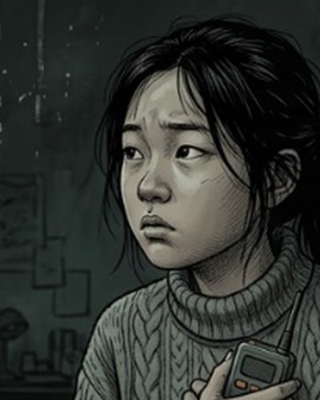
유진엄마가 남긴 마지막 말을 따라 호출기를 찾는 누나. 민호언제부턴가 누나보다 어려진, 늘 열한 살인 동생.
민호언제부턴가 누나보다 어려진, 늘 열한 살인 동생.
손전등 빛 속, 판자에 못이 박힌 옷장 서랍과 안쪽에서 긁힌 손톱자국
끼익… 끼익…
유진은 이 옷장에 못이 박힌 밤을 몰랐다.
유진 · 25세
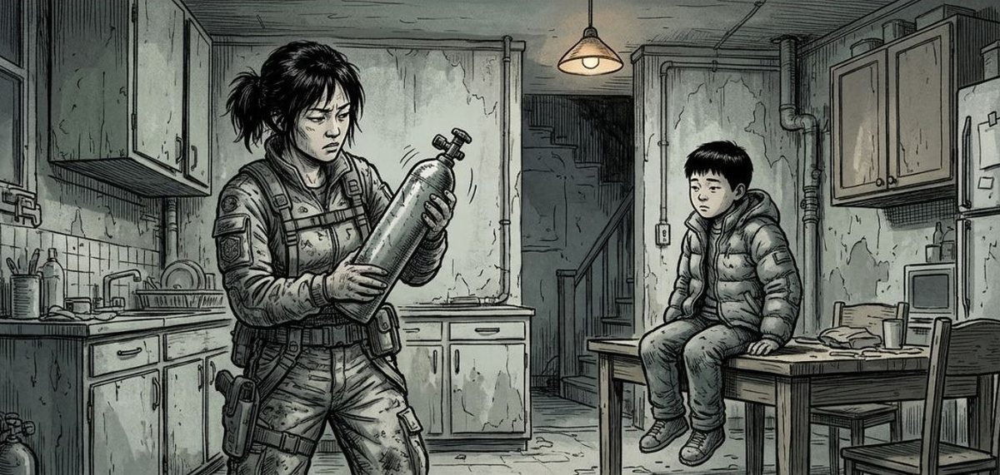
식탁에서 장갑 낀 손으로 숟가락을 쥔 아빠, 이상하게 쳐다보는 유진
유진아빠, 집에서 장갑은 왜 껴?
아빠손이 시려서. 감기야, 감기.
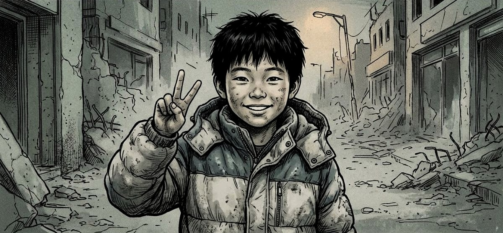
누나 거랑, 내 거.
무너진 거리에서 쪼그려 앉아 민호와 눈높이를 맞춘 유진
유진엄마 아빠 거는?
민호그것도 구하는 중이래.
다 같이 갈 거래.
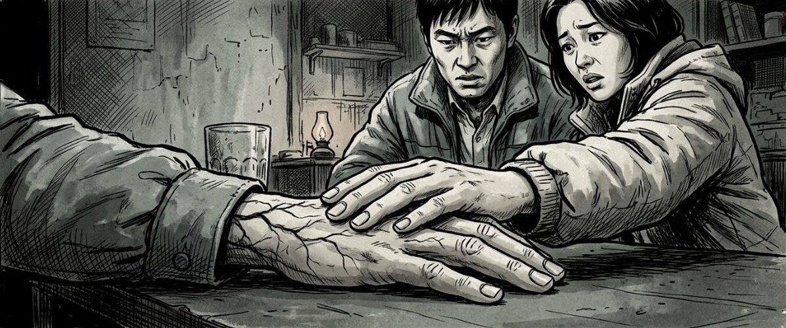
밤, 욕실에서 아빠의 팔 붕대를 갈아 주는 엄마
아빠유진이한텐
말하지 마.
엄마그럼 뭐라고 해요.
부엌에서 엄마가 유진에게 빈 산소통과 손그림 지도를 건넴
엄마읍내 병원 창고에
산소통이 남았대. 오늘 밤 다녀와.
유진밤에?
사냥꾼들 돈다며.
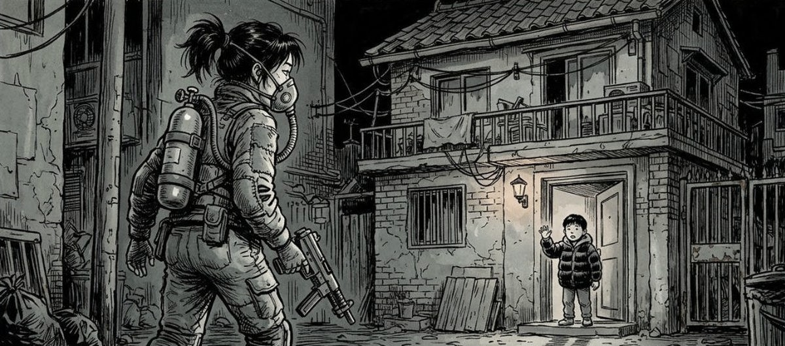
엄마 아빠 잘 지켜.
밤길에서 돌아보는 유진, 2층 창가에서 장갑 낀 손을 흔드는 아빠의 실루엣
아빠가 손을 흔들었다. 장갑 낀 손이었다.
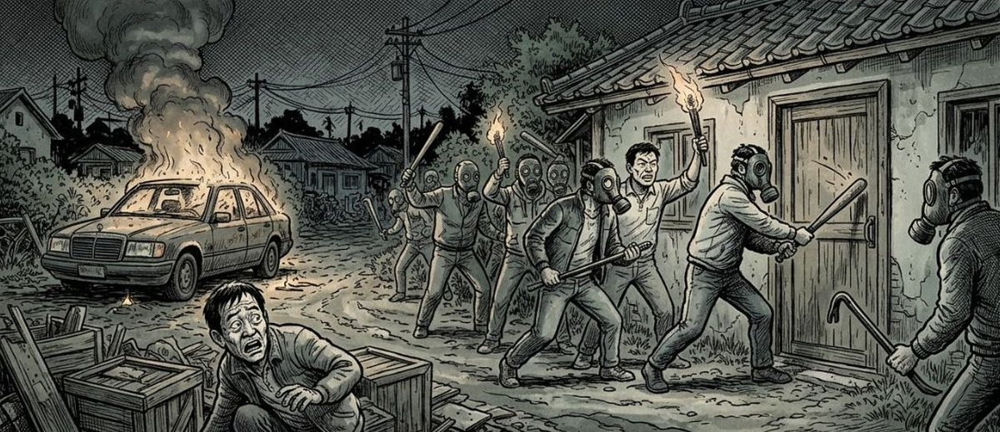
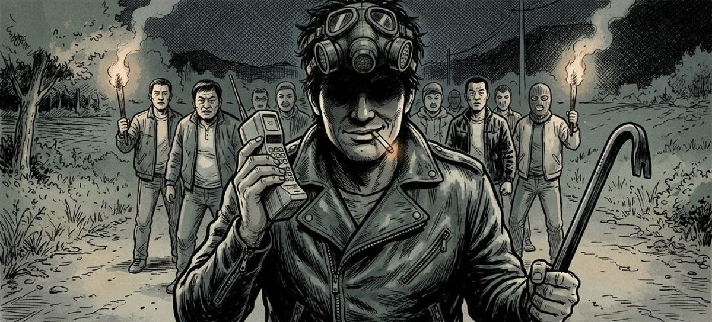
호출기다.
쓰러진 남자 옆에서 호출기를 횃불에 비춰 드는 깡패, 뒤에서 손짓하는 두목
깡패하나 건졌다!
두목다음 집.
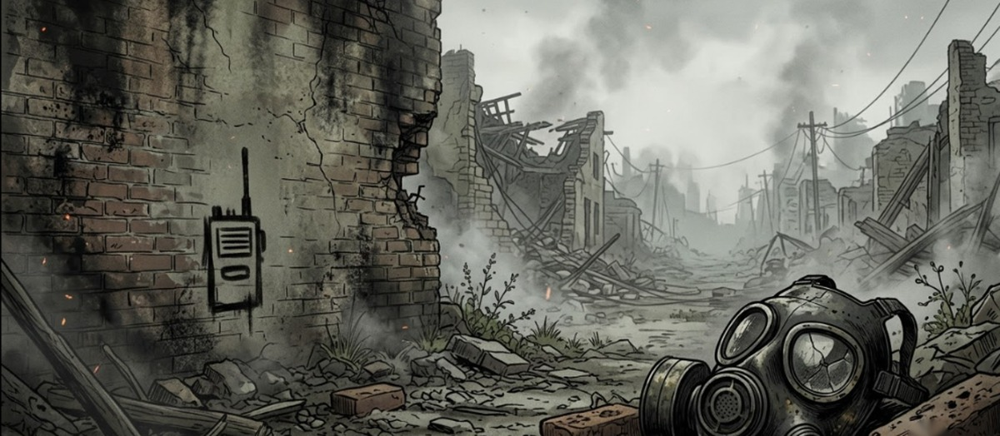
"나 더 이상 못 버틸 것 같아."
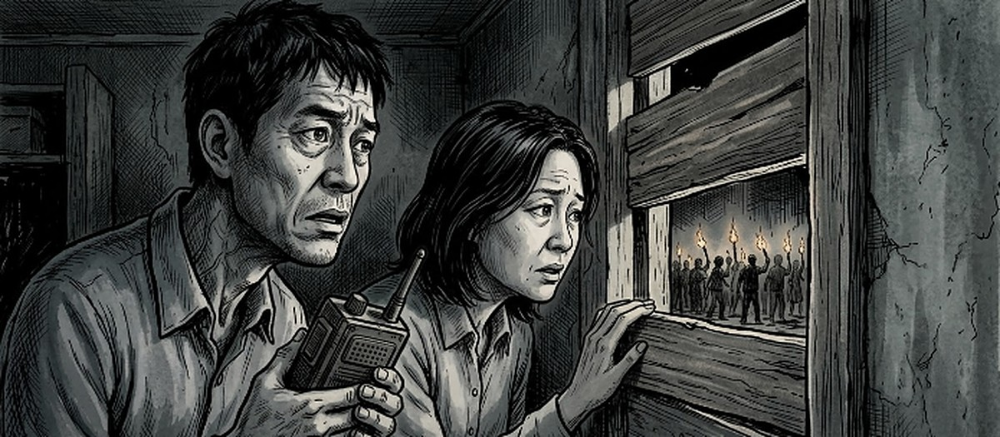
놈들이 오기 전에.
판자 창가에서 아빠가 2층 옷장을 턱으로 가리키며 말함
아빠놈들도 감염된 건
안 열어.
엄마당신을 거기 넣고…
못을 박으라고요?
서랍 안 아빠의 무릎 옆에 천에 싸인 꾸러미를 놓는 엄마의 손, 그 위를 덮는 아빠의 손
엄마는 쏘지 못했다.
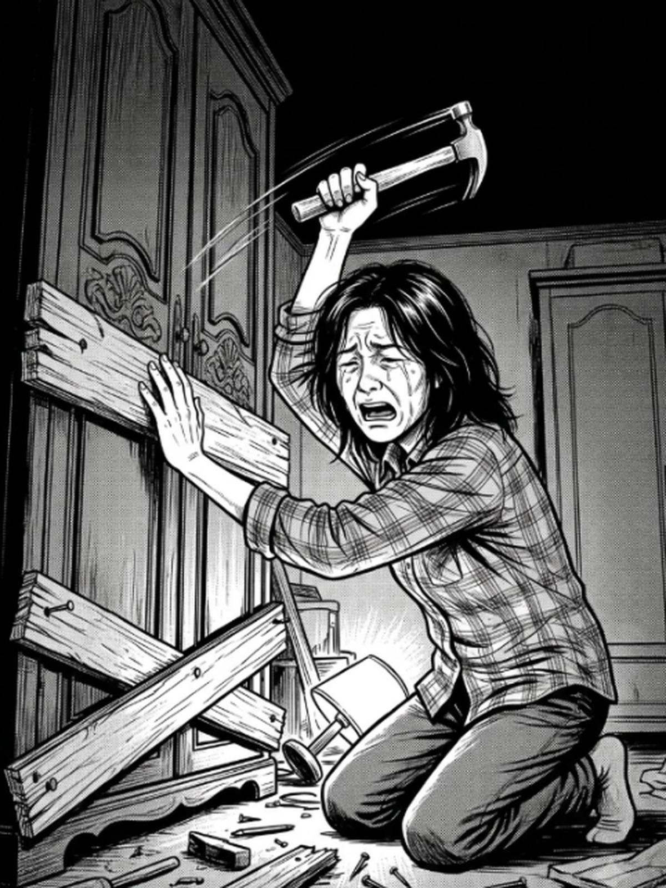
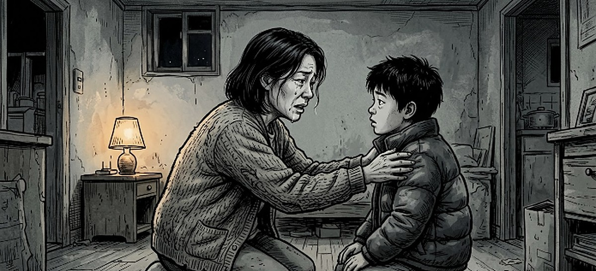
잘 부탁해.
엄마의 품에서 2층 옷장 쪽을 바라보는 민호
민호누나한테
말해요?
엄마아니.
아빠는… 떠난 거야.
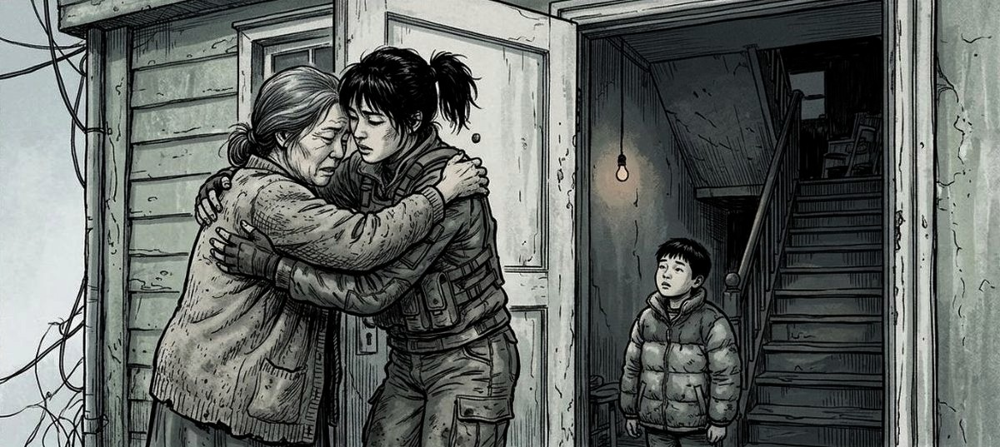
떠났어.
새벽, 엄마의 퍼렇게 멍든 손가락을 잡는 유진
유진엄마 손 왜 그래?
엄마…못 하나
박다가.
민호는 2층을 올려다보았다.
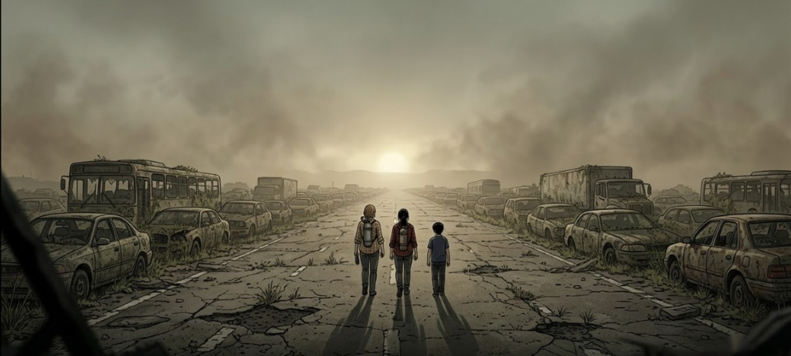
떠나는 길에서 혼자 뒤돌아 판자 박힌 2층 창을 보는 민호, 앞에서 부르는 유진
유진민호야, 안 와?
민호…응. 가.
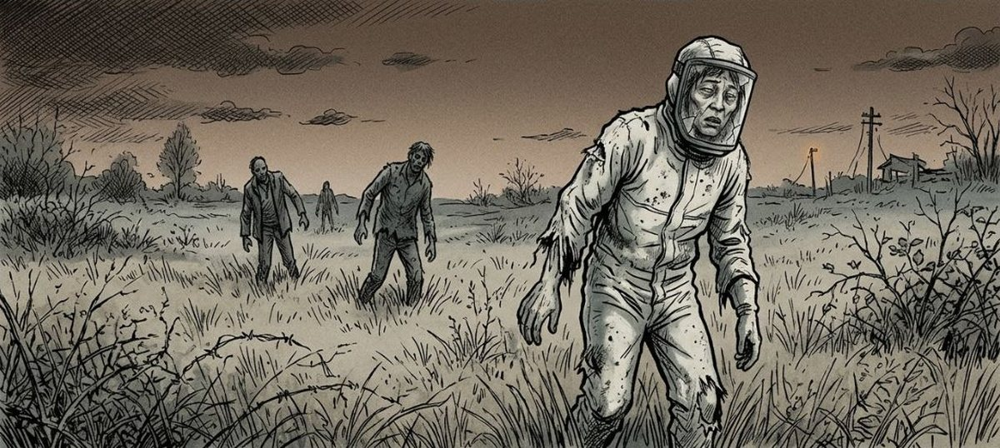
갈색 안개 낀 산등성이, 확성기 소리를 쫓아 걷는 방독면의 남자
같은 시각, 산 너머에서는 한 남자가 호출기를 찾고 있었다.
영화 〈골디락스존 프로젝트〉